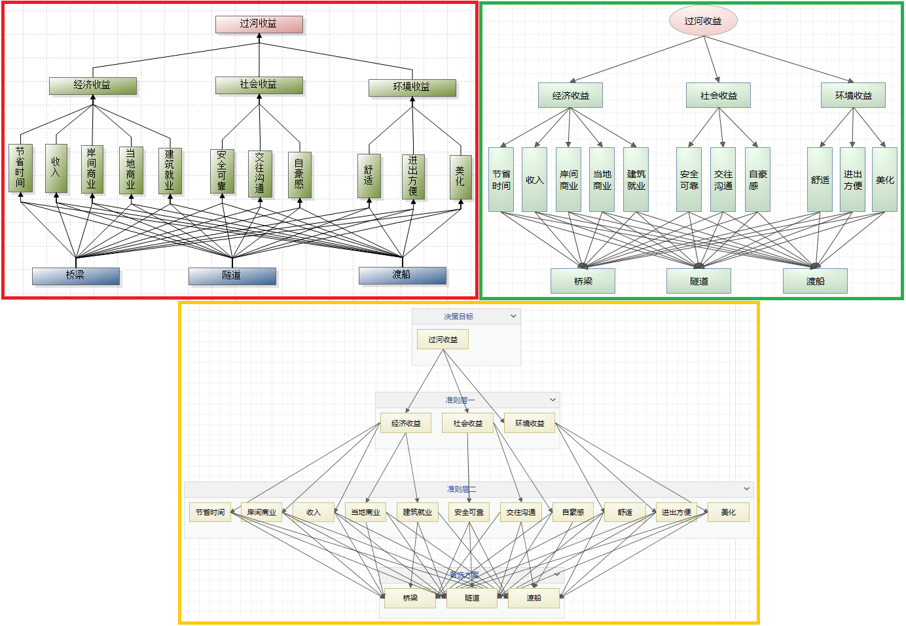

本文从9个方面对比yaanp与Super Decisions功能。
层次分析法(AHP)支持
层次分析法模型可以看做是一种特殊的网络模型：每一层对应一个簇，簇内节点对应层次中的每个要素，簇内节点之间没有相互影响，各层之间没有影响关系循环。
在yaanp和Super Decisions中，都可以通过构建特殊的单网络模型对层次模型进行分析处理，但yaanp还可以使用层次模型的方式进行模型构建(类似yaahp)，这种形式的层次模型更容易理解。
下图展示了三种过河收益决策的模型图，分别为层次分析法软件yaahp中构建的层次模型图(红框内)、yaanp中构建的层次模型图(绿框内)和yaanp中单网络ANP模型方式构建的层次模型图(黄框内)。图中下方的网络模型图与其他两个层次模型图完全等价，并且在计算参数设定相同的情况下，最终的计算结果完全相同的。

关于层次模型的不同构建方式的内容可以参考这篇文章：层次模型的不同构建方式
网络分析法(ANP)支持
yaanp和Super Decisions都支持网络分析法建模、计算和分析。
图形化的模型构建
yaanp以完全图形化的方式进行模型构建的操作，并且模型构建模块还提供了检视模式和顺序设定模式。
检视模式可以方便地查看簇间连接及各要素的连接情况，下图最左侧显示簇间连接、中间显示以选中要素为起点的连接、右侧显示以选中要素为终点的连接。
顺序设定模式可以方便地设定要素的顺序，要素的顺序会影响判断矩阵中要素顺序、问卷中两两比较问题顺序。进入顺序设定模式后，简单地按顺序鼠标点击要素图形就可以完成顺序的设定。
Super Decisions虽然提供了图形化的模型展示功能，但没有提供图形化的模型构建功能，编辑模型只能通过功能窗口的方式。全图形化的模型编辑在很多方面有优势，并且yaanp后续的规划中还会提供基于DEMATEL的要素影响关系分析和网络结构自动生成功能。
群决策
群决策是为了充分发挥集体的智慧，由多位专家共同参与决策分析并制定决策的整体过程。
yaanp提供群决策支持，能够管理参与决策的专家信息以及他们提供的决策数据。yaanp还提供了多种专家数据集结方法供用户选择。
Super Decisions没有提供群决策支持。
问卷生成和导入
对于利用层次分析法或网络分析法的决策过程，经常会向专家分发调查问卷，然后回收调查问卷获得专家数据。利用调查问卷可以方便决策数据的收集，大大降低数据输入的工作量。
yaanp提供两种外部调查问卷生成和导入功能：Excel文件格式、问卷星。
使用yaanp生成Excel格式的可导入调查问卷，分发给专家填写并回收后，导入yaanp就可以进行计算分析。
也可以生成问卷星问卷创建文本，然后在问卷星中创建调查问卷。邀请专家填写问卷、回收数据后，导入yaanp进行计算分析。
Super Decisions没有提供问卷生成和导入的支持。
判断矩阵一致性修正
对于不一致的判断矩阵，yaanp提供了两种自动修正算法，并且默认设定下可以根据不一致判断矩阵的特点自动选择合适的算法进行修正。
更多一致性修正的说明请参考yaanp使用手册7.5节。
Super Decisions没有提供一致性修正功能。
判断矩阵检查
yaanp 的判断矩阵检查功能利用一致性自动修正的思路，尝试对不一致的判断矩阵进行修正，并根据修正结果给出不一致判断矩阵的数据
评价和相处理建议。
在回收调查问卷数据后，利用判断矩阵检查功能，根据检查结果和建议做相应的处理，可以让决策数据质量更高、决策结论更加科学。
Super Decisions没有提供类似的功能。
多种标度类型支持
yaanp支持1-9、1-5、1-3和1-2标度，用户有更多的选择。
Super Decisions只支持1-9标度。
灵敏度分析
通过灵敏度分析，能够确定某个要素权重发生变化时，对各个备选方案权重产生了什么样的影响，从而引导用户在更高的层次作出决策。
利用yaanp提供的灵敏度分析功能，能够从纵向和横向的角度，查看备选方案权重随不同要素变化而变化的情况。
Super Decisions也提供了灵敏度分析功能。